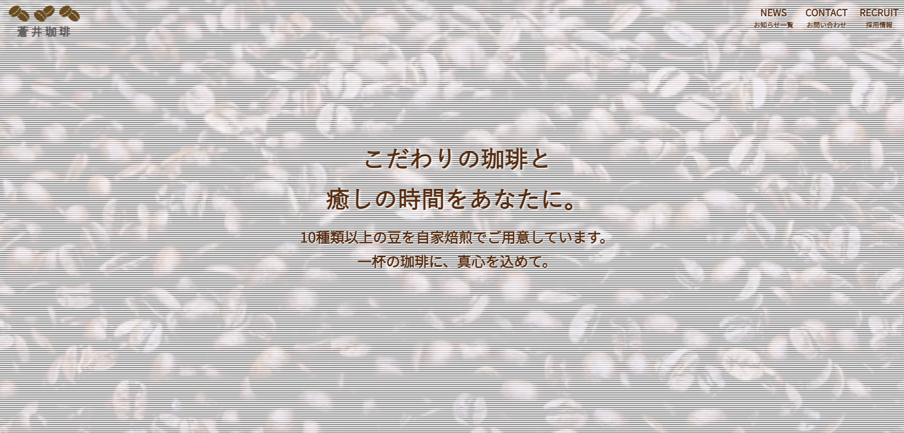
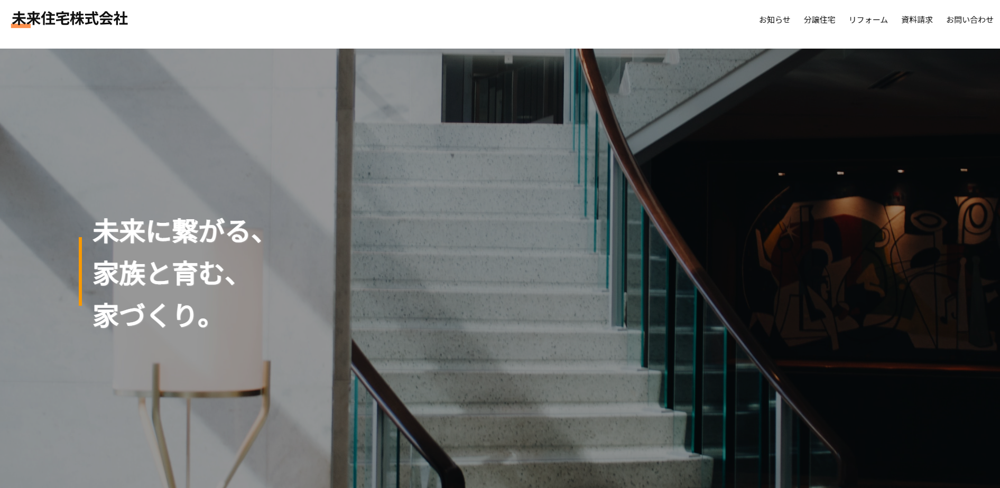

Works 制作実績

| 使用言語 | HTML/CSS/JavaScript/jQuery/Canva(ロゴ作成で使用)/AdobeXD |
|---|---|
| 制作箇所 | デザイン/ロゴ/コーディング 【以下制作ページ】 トップ/記事一覧/記事詳細/お問い合わせフォーム(内容確認画面/完了画面)/採用情報(応募フォーム/内容確認画面/完了画面) |
| 制作期間 | デザインの思考を含めて約60時間(約12日間) |
| こだわり | 初めてデザインからコーディングまで制作したサイトです。珈琲にこだわっているカフェだということが伝わるようにしたかった為、ファーストビューで背景に珈琲豆の動画を入れました。動画上の文字が見やすくなるように、 白系の縞模様を入れコントラストを付けました。トップページのメニュー一覧では、JavaScriptファイルのLuminousを使用し、ライトボックスを実装しました。 |

| 使用言語 | HTML/CSS/JavaScript/jQuery/Canva(ロゴ作成で使用)/AdobeXD |
|---|---|
| 制作箇所 | デザイン/ロゴ/コーディング 【以下制作ページ】 トップ/分譲住宅/リフォーム/施工事例一覧/施工事例詳細/記事一覧/記事詳細/お問い合わせフォーム(内容確認画面/完了画面)/資料請求フォーム(内容確認画面/完了画面) |
| 制作期間 | デザインの思考を含めて約100時間(約20日間) |
| こだわり | なるべく多くのコーポレートサイトを見た上で、ユーザーにとって見やすくアクションを起こしやすいサイトを目指し制作しました。縦長のデザインなのでヘッダーを固定し、下まで見終えた際もお問い合わせや資料請求などを置いて、ユーザーが希望するページにいつでも飛べるような工夫を取り入れました。 |

| 使用言語 | HTML/CSS/JavaScript/jQuery/AdobeXD |
|---|---|
| 制作箇所 | デザイン/コーディング 【以下制作ページ】 トップ/作品一覧/お問い合わせ(Googleフォーム使用) |
| 制作期間 | デザインの思考を含めて約70時間(約14日間) |
| こだわり | ポートフォリオサイトでは一番に見て頂きたい作品一覧を最初に置き、それぞれのサイトを直接リンクすることで、見たい場所にすぐ移動できるような構成で制作しました。トップページの背景にclip-pathを使用し、セクションごとに斜めの背景色で区切ることでアクセントを付けました。 |

| 使用言語 | HTML/CSS/JavaScript |
|---|---|
| 制作箇所 | デザイン/コーディング |
| 制作期間 | 約5時間 |
| こだわり | JavaScriptの学習のアウトプットとして、おみくじゲームを制作しました。クリックでおみくじの結果を表示し、それによって画像や文章を変えたり出現の確率を結果ごとに変える機能を実装しました。 |